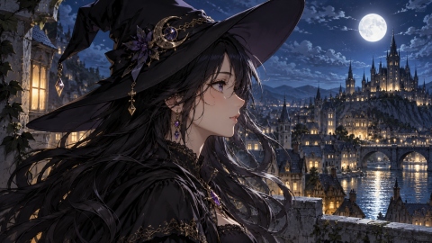
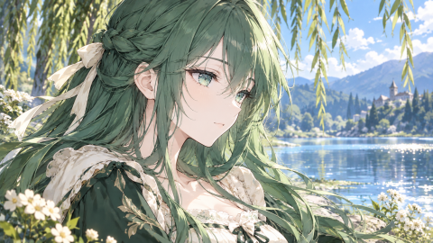

01
选择素材
拖入图片、视频或文件夹，输出目录和文件名自动生成。
应用会明确告诉你环境是否准备完成、正在使用哪张显卡，以及当前处理到哪一步。
拖入图片、视频或文件夹，输出目录和文件名自动生成。
选择图片超分、视频超分、视频补帧或超分并补帧。
自动检测图形设备并优先选择高性能设备，也支持手动调整。
查看总进度和当前阶段，失败时可复制日志或导出诊断信息。
提高原图分辨率并增强可见细节，适合截图、插画、封面和低分辨率图片。

逐帧增强视频画面，再重新合成为高分辨率视频，让低清素材拥有更多细节。
通过 RIFE 生成中间帧，提高动作、镜头移动和游戏录制画面的流畅度。
先提升清晰度，再生成中间帧，一次完成分辨率与流畅度增强。
了解显卡表现，保留更多素材信息。新的输出选择与失败恢复，让每一步处理更从容。
支持 DirectX 12、Vulkan 和 1080P／2K／4K 三档分辨率，包含三个实时渲染场景，提供总分、分项成绩及帧率数据。
编码选项移至基础设置，新增 AV1、受支持路径的 HDR 输出，以及超分补帧的 MP4／MKV／MOV 格式选择，并补充各选项的用途与兼容性说明。RIFE 补帧暂不支持 HDR 输出。
改善多音轨、字幕和章节保留，增加处理前的兼容提示；最终合成失败后可调整格式重新合并，无需重复 AI 处理。
自动选择优先推荐 RIFE 4.26，改进自定义 60 FPS、可变帧率素材、分段拼接、音画同步及色彩处理。
新增官网更新入口，改善进度反馈、设置说明、窗口圆角、主题记忆及安装界面。
拖动分界线，在同一画面中比较细节。上排为 2 倍超分，下排为 4 倍超分，也可放大查看原图与处理结果。

如果 SLV 确实帮助到了你，并期待后续功能开发、兼容性优化与维护，可以自愿支持作者。
无论捐赠与否，都不影响任何功能使用。并在此郑重感谢所有捐赠过 SLV 的捐赠者！
每一份支持都会用于继续打磨稳定性和使用体验。
SLV 提供本地图片与视频处理功能，不提供素材或影视资源，也不提供破解或绕过版权保护的功能。
AI 超分与补帧不会改变素材的版权归属。建议使用自己的作品或已获授权的素材；分享、发布处理结果时，也请留意原作品的授权范围，尊重创作者的权益。本说明仅介绍软件的使用边界，不构成法律意见。
FFmpeg 采用 GNU LGPL 2.1 或更高版本许可；包含 GPL 组件的构建受 GPL 约束。
版权归其作者所有，Real-ESRGAN 采用 BSD 3-Clause 许可。
版权归各自作者所有，SnowLeopard Vision 调用随软件提供的本地组件。
版权归各自作者所有，Anime4KCPP 提供本应用调用的本地命令行实现。
rife-ncnn-vulkan 采用 MIT 许可，并使用 ncnn 与源自 RIFE 项目的模型。